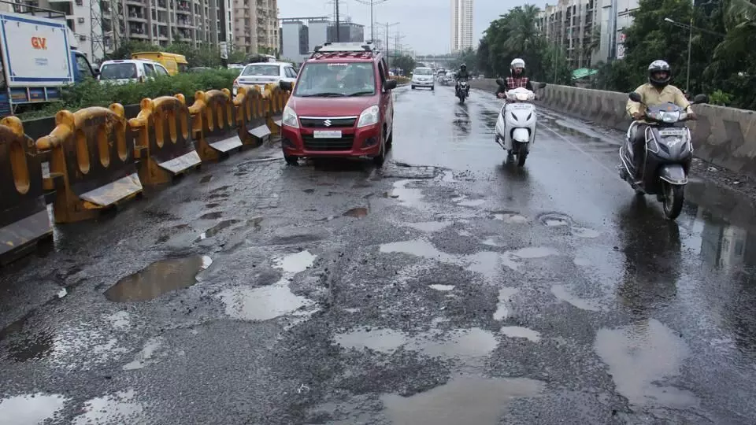

Public Infrastructure Issue Reports
Verified complaints logged by citizens while physically present inside civic zones.

Pending Review
Severe Road Damage & Potholes
The road surface immediately approaching the bridge from the eastern side is completely destroyed. It is full of deep potholes hidden by water logging due to recent rain. This is a severe hazard for two-wheelers and is causing major traffic bottlenecks during rush hour. Immediate attention and repair is required to avoid accidents.